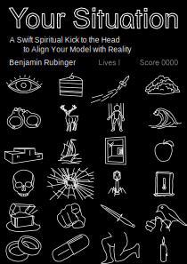

Books
Everyone, including you, can play your game of life much better than you are right now. This book helps you identify the delusions and hidden mechanics that stop you from achieving your goals. These are the verifiable and unpopular facts that you can apply today to save your own life. This book will hurt your feelings.
A book about communication and your war for social reality. Communication determines who gets what benefits, the things you need to survive. Everything people say is designed, consciously or not, to increase their social status in the forever war over social reality. Learn how communication really works, the fundamental strategies, where politics comes from and how to use communication to thrive.
Create and operate organizations with incentives that better align all participants with the mission. A working system to integrate prediction markets into organizations. A version of futarchy.
My proposal for the best calendar for humans on earth, the HOD calendar, Holocene Ordinal Decimal. Introduces calendars and calendar reform from the ground up, with animations.
Article about the dynamics of the prettiest girl in the world
Works in Progress
Human Carrying Capacity of the Earth
Explores the limits of current technology to sustainably support the largest possible healthy human population on Earth. challenges popular low estimates of carrying capacity by describing and calculating exactly how every known bottleneck allows us to carry far, far more people than we commonly think. Status is complete and unpublished.
What Will Happen
A book of definitive future predictions, made by combining known facts of human nature, the state of the world, and simple exponential trends into logical conclusions. Predicts the future of population, food, sex, literacy, beds, showers, clothing, education and more. Status is 10% complete.
Introduction to Rockets
A book that explains rockets from the ground up. what a rocket is, how it works, the parts, engine cycles, how they are manufatured, how they launch and operate, things you can do with rockets in space, timeline of rocketry, rocket alternatives. Includes a simple interactive mechanics simulation to demonstrate motion, acceleration and orbits. The textbook form of Everyday Astronaut and Scott Manley's youtube channels. Status is complete and unpublished.